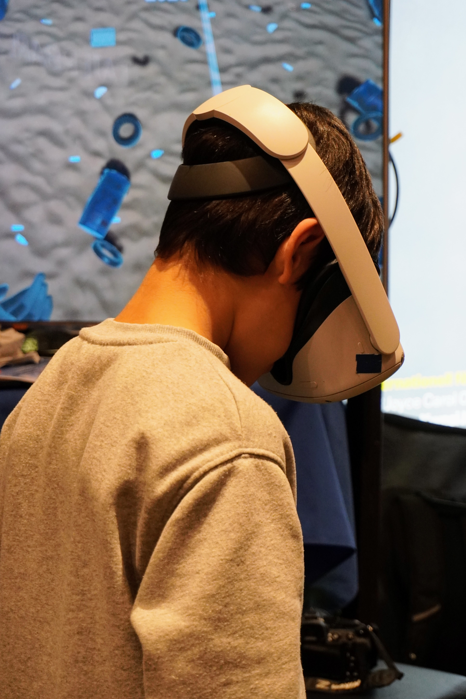
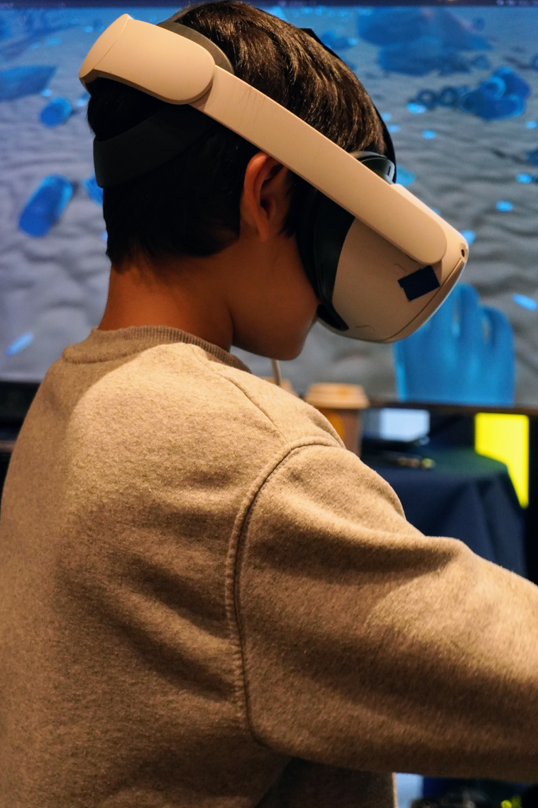
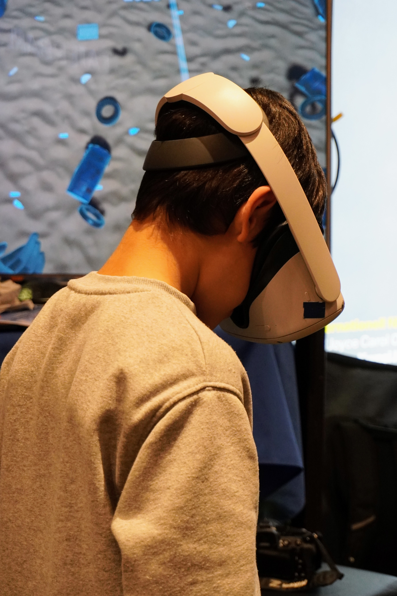
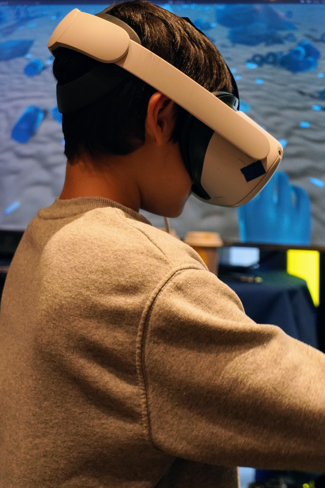

What it is
Submergency is a virtual reality experience that takes us on a journey through our oceans - from what it was like generations ago to what it is like now. It is an effort to bring the plight of the oceans closer to us.
After a brief tutorial to familiarize themselves with the controls, our viewer finds themselves in the wide blue ocean. In front of them is a timeline. As they swim along the timeline into the future, they can see how the ocean changes along with the decades, with plants gradually looking sicker, fewer fish, and drastically but steadily increasing plastic waste. The viewer can also swim to the surface of the ocean.
Now, the viewer is no longer sitting in the comfort of their home reading about plastic in the ocean and suffering animal life; they can experience it themselves almost first-hand.
Why do this?
The issue of pollution in our oceans, especially with plastic, has been getting worse over the years. Since 1990 until 2019, the amount of plastic in our oceans has roughly doubled every decade. This has resulted in the loss of a great deal of wild-life and the endangerment of the entire ocean ecosystem, from plants and fish to corals.
Most of us will never get to see the reality of our oceans in person. Which is why we created Submergency - to provide a safe but honest way to see and experience the true state of our oceans and how they have changed over the years.
How does one interact?
There are two ways of interacting with our virtual environment:
Quest 2 + Hand-held Controllers
The participant puts on the Quest 2 headset and stands within a demarcated space on the ground. They use two hand-help Quest 2 controllers in order to move. The controllers are moved in a natural swimming motion. The participant must hold down a button at the start of a movement and release the button at its end. There is another button for grasping objects. The direction of the swimming motion determines the direction in which the participant will be propelled.
Quest 2 + Hand Tracking
The participant puts on the Quest 2 headset and stands within a demarcated space on the ground. They must move their hands in the natural swimming motion while keeping their fingers together as one would while swimming. The direction of the swimming motion determines the direction in which the participant will be propelled.
Technology used
- Oculus Quest 2 headset and controllers was used as the main interface, because it does not need to be connected with a cord, which gives users more freedom. We also had the possibility to borrow two Quest headsets, which helped the development process.
- TV screens were used for spectating
- Unity is a real-time development engine made for facilitating collaboration and building games and other interactive experiences. It was used to build the environment, because we had previous experience with Unity within the team.
- Blender is a free and open source software commonly used for 3D modeling and animation. We used Blender to create our own 3D models which we could import into Unity, and we opted to use this tool because we had experience with this within the team too.
- Github was used for collaborative working, planning and task tracking
- Discord was used for communication
- Google Drive, Docs, Slides etc. were used for note-taking, making presentations, preparing submissions and record keeping
Who is it for?
Submergency is built for a large variety of people, there is something for everyone. Experiencing the reality of our oceans through a novel swimming experience is exciting for adults and children alike. The ocean is filled with things like plants, beautiful fish, and unfortunately plastics. This project hopes to raise awareness about the problem of plastic pollution for adults and children alike.


 



Who made it?
Submergency was created by Akshata Murdeshwar, Jacky Liu, Linnéa Gustafsson, Saga Palmér, Shiqi Gong, and Sofia Bergqvist as a part of the Advanced Graphics and Interaction course at KTH Royal Institute of Technology during the autumn of 2023.
The process
The environment
Most of the rocks are free downloaded 3D models but with different applied textures and normal maps. LODs are also added to all rocks. They are all saved as prefabs and placed out in different locations in the environment. Some rocks and corals (including the materials) are however modeled by us, and so is the kelp that we have used to decorate the environment. The kelp was also animated through weight painting and rigging.
To create the sand and mountains, terrain tools have been used and colored with different diffuse textures and normal maps. The terrain has also been painted to be lowered and raised in different spots to bring the terrain more to life. The development process for the sand and mountains were harder than expected as everything in the terrain is connected. Therefore, if you made one little change to one small part of the terrain, everything had to be changed. It was also not decided on exactly how we wanted the terrain so there were lots of tries and failures.
The fish are six different free downloaded 3D models with bone structure. Rigidbody, box collider, animation, rig builder, LODs and a FishMovement script that controls how the fish will move around has been applied to every fish prefab. Another script then spawns the fish in the environment. The fish started out as particle systems with sprites. This actually worked surprisingly well as a fish representation when swimming along the timeline and was a good optimization strategy. However, there were also a number of issues with this solution. As sprites are always facing the camera in the same direction, the fish appeared to be swimming backwards if looking at the fish from the back and did not cast any shadows. We thought it was important to therefore turn them into 3D models instead.
We started out by looking for free 3D Unity assets to add plastic trash to our environment, but this proved somewhat hard to come by. Therefore some of the objects had to be modeled in Blender, and then imported into Unity. One challenge with this part of the environment was that the amount of objects needed to convey the reality of how plastic pollution of the oceans has increased over the decades posed serious processing issues. To solve this, LODs had to be applied, and some parts of the environment where the user cannot go was decorated with static meshes, instead of interactable objects. Another challenge we faced regarded importing materials created in Blender, because Unity cannot read the entire node maps used in Blender to create materials. Thus, the materials we wanted to import had to be converted to a form suitable for Unity.
Saga
Created the sand and mountains, and worked on the fish.
Akshata
Modeled the kelp, the rocks, and a few different corals. Animated the kelp.
Sofia
Modeled some plastic objects and their materials. Responsible for placing plastic objects in the environment according to actual data on how the amount of plastic in our oceans has increased over the decades.
Swimming experience
In this vibrant underwater environment, we've created a lifelike swimming experience for players through numerous bold attempts. We have employed the Oculus SDK to implement the swimming interaction, aiming to allow players to interact naturally with the game while enjoying the most realistic swimming sensation possible.
During the development process, we used two different control methods: controllers and hand tracking. Although these two methods have subtle differences in implementation, they mainly utilize the Oculus SDK to obtain the hand's velocity. Based on the velocity's direction and magnitude, it's then translated into a force that propels the player forward.
Throughout this process, we encountered a series of challenges and obstacles. How do we simulate the most realistic swimming experience while allowing users to interact naturally? The Oculus SDK does provide a method to determine hand velocity, but its accuracy and latency can affect the quality of the interaction. Even minor discrepancies can be magnified, leading to player confusion or dissatisfaction. Swimming interaction is a dynamic and continuous process, introducing complications during testing as it’s not straightforward to identify issues just by setting breakpoints. In the end, we had to resort to continuously printing out key parameters to troubleshoot the problems.
It is crucial to delve into the SDK's source code during development. We cannot blindly use the methods encapsulated in the SDK without careful evaluation, as these methods might come with their own set of problems. In the process of developing a controller-less swimming interaction, our over-reliance on the Oculus SDK's hand velocity acquisition function became a glaring issue. We used this function as the foundation for our swimming interaction and based our algorithms on it. This decision subsequently led to numerous bugs and exhaustive debugging sessions. After several days of investigation, we discovered inherent issues with the method provided by Oculus, forcing us to reevaluate and discard a significant portion of our previous work. By rewriting Oculus's method, we finally solved the issue of acquiring hand velocity.
Jacky
Focused mainly on the swimming mechanics using Controllers.
Shiqi
Worked on both the swimming mechanics using controllers, and the hand tracking interaction.
Water and post-processing
To create the underwater environment, several methods were used. Different post-processing effects were implemented: Split toning with brown shadows and blue highlights; Bloom with a tint of blue; Chromatic aberration; Lens distortion; A dark blue vignette. A blue linear fog was also applied. To add more life to the water, bubble particle systems were placed throughout the ocean floor, decreasing along the timeline. Light beams were created, using a particle system with stretched additive-blended particles.
For the surface, we used the built-in ShaderGraph in the URP render-pipeline.
There are quite many assets for creating realistic-looking underwater environments, but not many for free. Since we did not want this project to have any paid assets, we had to create most of the water from scratch, which was time-consuming and required a good deal of Unity experience.
There was also the issue that the water looked quite different in the Oculus Quest 2 (i.e., blurrier) than on a computer screen, so we had to go back and remove the initially applied Depth of Field effect (Gaussian blur), and also take away the Color Adjustments we used in our first drafts. A learning from this process is that finding information about how to create advanced graphics, like underwater environments, can be rather complex and cumbersome, and might require a lot of prior knowledge.
Linnéa
Worked with the post-processing, created bubbles, and light beams.
Jacky
Worked on the ocean surface.
Audio
We created our own Submergency soundtrack and sound effects using Logic Pro. The soundtrack is played as background audio throughout the whole experience. We have sound effects for the swimming motion, i.e., a sound that is triggered when initiating a swim stroke, and a longer audio tail is audible as long as the user moves.
Linnéa
Created the soundtrack and sound effects, and worked with audio interaction.
Shiqi
Worked with audio interaction.
Swimming Tutorial
In the beginning of the process we used written instructions to let users know how to move, but we soon realised that communicating this novel interaction via text wasn't ideal. Therefore, we decided to create a swimming tutorial. This included checkpoints, to let the user know what actions are possible (such as swimming in any direction or grabbing water bottles). Using the Recorder Plugin, controller and hand tracking animations were recorded, so that the users could see for themselves how to hold the controllers or move their hands.
Jacky
Responsible for creating the tutorial scene and a smooth scene transition.
References and resources
Jordan, R. (2018, November 30). Virtual reality could serve as powerful environmental education tool, according to Stanford researchers. Retrieved from https://news.stanford.edu/2018/11/30/virtual-reality-aids-environmental-education/
Ahn, S. J., Bostick, J., Ogle, E., Nowak, K. L., McGillicuddy, K. T., & Bailenson, J. N. (2016). Experiencing Nature: Embodying Animals in Immersive Virtual Environments Increases Inclusion of Nature in Self and Involvement with Nature. Journal of Computer-Mediated Communication, 21(6), 399-419. https://doi.org/10.1111/jcc4.12173
Unity Asset Store - Aliosa. 3D Seashell. Free asset. https://assetstore.unity.com/packages/3d/characters/animals/fish/3d-seashell-208785
Unity Asset Store - devotid. Cutlery Silverware PBR. Free asset. https://assetstore.unity.com/packages/3d/props/food/cutlery-silverware-pbr-106932
Unity Forum. (2014, August 30). Underwater environment breakdown. https://forum.unity.com/threads/underwater-environment-breakdown.265543/
Free3D - animatedheaven. Sea Shell PBR 3D Model. Free asset. https://free3d.com/3d-model/sea-shell-pbr--55575.html
Jang, S., Park, J., & Hong, H. (2022). In Visible Climate Change: Exploring Immersive Data Visualisation to Promote Climate Change Awareness in a VR Game. https://doi.org/10.1145/3505270.3558335
Jordan, R. (2016, October 18). Stanford researchers release virtual reality simulation that transports users to ocean of the future. Retrieved from https://news.stanford.edu/2016/10/18/virtual-reality-simulation-transports-users-ocean-future/
Turbosquid - TurboCG 3D. Bamboo Shark 3D model. Free 3D model. https://www.turbosquid.com/3d-models/shark-3d-model-1551943
Turbosquid - mimi3d. 3D Atlantic bluefin tuna. Free 3D model. https://www.turbosquid.com/3d-models/3d-atlantic-bluefin-1416066
Turbosquid - Dasha9882. 3D Fish1. Free 3D model. https://www.turbosquid.com/3d-models/3d-fish1-1767886
Turbosquid - Dasha9882. Fish1 3D model. Free 3D model. https://www.turbosquid.com/3d-models/fish1-3d-model-1767833
Turbosquid - maglegard. fish 3D model. Free 3D model. https://www.turbosquid.com/3d-models/fish-3d-model-2036024
Rigor Mortis Tortoise. (2023, April 1). How to EXPORT MATERIALS from Blender to Unity 2023 (Updated). [Video]. YouTube. https://www.youtube.com/watch?v=yloupOUjMOA
Zii. (2021, March 23). Free URP Water System by Unity. [Video]. YouTube. https://www.youtube.com/watch?v=PtI9LYfx1Dc
Royal Skies. (2019, June 30). Blender 2.8 Exporting FBXs to Unity 3D (In 60 Seconds!). [Video]. YouTube. https://www.youtube.com/watch?v=ysl0qYq5p9w
Warwlock. (2022, August 13). Blender to Unity Node Export Complete! (Blender Nodes Graph for Unity). [Video]. YouTube. https://www.youtube.com/watch?v=sDOBdnvtDM8
Ben Cloward. (2022, June 30). Underwater Post-Process Effect - Shader Graph Basics - Episode 52. [Video]. YouTube. https://www.youtube.com/watch?v=BNldzmlSvCA
Terresquall. (2023, August 3). How to create an underwater effect in Unity (using a post-processing image effect shader). [Video]. YouTube. https://www.youtube.com/watch?v=dttwE86D-SE
Terresquall. (2023, April 17). Creating an Underwater Game (like Subnautica) in Unity — Part 10: Underwater Effect and Animations. [Video]. YouTube. https://www.youtube.com/watch?v=N6XsAX4eyx4&list=PLgXA5L5ma2BuXG5L_hcXKc8RU2gNVdQ6F&index=13
Terence. (2023, July 22). Underwater effect shader from our Subnautica series. [Blog post]. Retrieved form https://blog.terresquall.com/community/topic/underwater-effect-shader-from-the-subnautica-series/
The CG Essentials. (2022, December 20). The ESSENTIAL Guide to Adding Curves in Blender! [Video]. YouTube. https://www.youtube.com/watch?v=9p0i8N04Xpo
The CG Essentials. (2021, February 18). BETTER PERFORMANCE in Blender with the Decimate Modifier! [Video]. YouTube. https://www.youtube.com/watch?v=N4QY-1Vf6LM
LlamAcademy. (2022, December 27). Free Automatic LOD Generation for 3D Models IN-EDITOR | Unity Tutorial. [Video]. YouTube. https://www.youtube.com/watch?v=EqVig88ZC_M
Ritchie, H., Samborska, V., & Roser, M. (2023). Plastic Pollution. https://ourworldindata.org/plastic-pollution
Unity Asset Store - Gest. Electric Scooter Prop. Free Asset. https://assetstore.unity.com/packages/3d/props/exterior/electric-scooter-prop-171335
Unity Asset Store - GamesAreLife. 3D Tire. Free Asset. https://assetstore.unity.com/packages/3d/props/3d-tire-102580
GameDevChef. (2020, June 25). Flocking AI Algorithm in Unity Tutorial. [Video]. YouTube. https://www.youtube.com/watch?v=mBVarJm3Tgk
3Dnot2D. (2023, June 13). Transfer HIGH POLY details to LOW POLY object in Blender. [Video]. YouTube. https://www.youtube.com/watch?v=l8xrSgyfEHs&list=LL&index=3&t=244s
sea-salt-crackers. (2021, September 24). Dynamic Kelp in Unity. [Blog post]. Retrieved from https://seasaltcrackers.wordpress.com/2021/09/24/dynamic-kelp-in-unity/
GMGStudio. (2022, May 15). 3D Rope in Unity | Hinge Joint. [Video]. YouTube. https://www.youtube.com/watch?v=C2bMFFaG8ug
Unity Asset Store - The Quantum Nexus. Mess Maker FREE. Free Asset. https://assetstore.unity.com/packages/tools/modeling/mess-maker-free-213803
20Nik. (2023, March 14). How to ADD Bones into any Asset (Blender / Unity Tutorial 2023). [Video]. YouTube. https://www.youtube.com/watch?v=rGOcvoNm7Bc
The team

linneag2@kth.se
sagapa@kth.se
akshata@kth.se
sobergqv@kth.se
hjjliu@kth.se
shiqig@kth.se